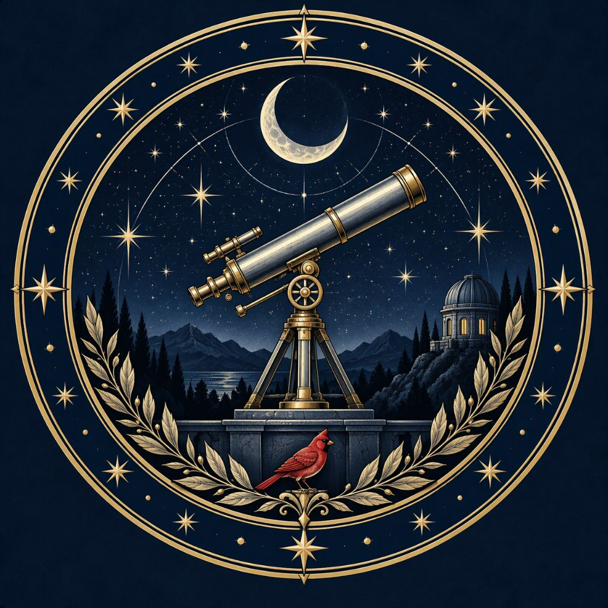

Mooncake ArchivesClassification: Unreal Ungh
Status: Archived
The first official entry in the Mooncake Archives, documenting the moment the archive system became operational.
The Mooncake Archives officially came online following successful website development and a series of JavaScript experiments.